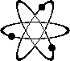

|
|
 |
So far, ACME Laboratories is merely the business name for Jef Poskanzer doing software development and consulting. Perhaps someday it will be more.
Meanwhile, I'm available for consulting in the Berkeley area or via the net. Full or part time, 1099 or W2. Anything from designing simple web pages to installing ultra-high-performance HTTP servers to building complex graphics-intensive user interfaces in Java or X. Specific areas of expertise: Unix (C, TCP/IP, X, Motif), Web (HTML, CGI, Java, HTTP), Graphics (image file formats, PostScript), and so on. Lately I've been doing a lot of work in Java. I've also written a bunch of freeware over the years, you can grab it and check it out. Some highlights are featured below.